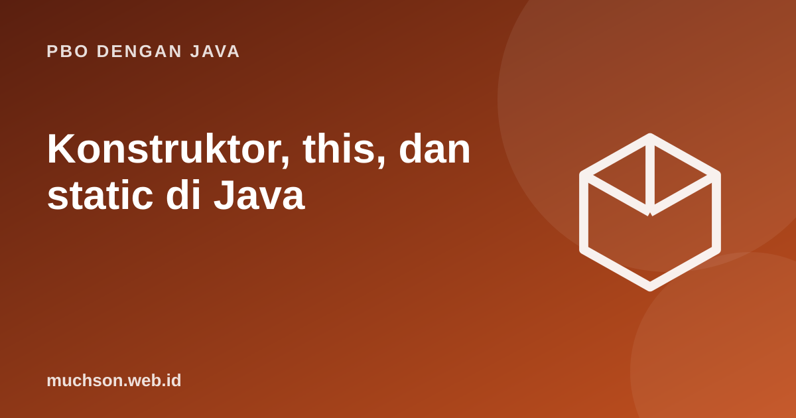

Beranda › Artikel › PBO dengan Java
PBO dengan JavaKonstruktor, this, dan static di Java
Bagaimana memastikan objek lahir dalam keadaan valid? Jawabannya konstruktor. Materi ini juga membahas this (objek saat ini), static (milik class, bukan objek), dan urutan inisialisasi yang sering muncul di soal ujian.
Sebaiknya sudah paham: class dan objek

Tujuan belajar
Setelah membaca dan mencoba materi ini, Anda mampu:
- menulis konstruktor dan overloading konstruktor
- memakai this untuk membedakan atribut dari parameter dan memanggil konstruktor lain
- membedakan anggota static dan instance
- mendeklarasikan konstanta dengan static final
- memprediksi urutan inisialisasi objek
Konstruktor
Konstruktor adalah blok khusus yang dipanggil saat new. Namanya sama dengan class dan tidak punya tipe kembalian. Bila Anda tidak menulis satu pun, Java menyediakan konstruktor kosong bawaan; begitu Anda menulis satu, yang bawaan hilang.
class Mahasiswa {
String nim, nama;
double ipk;
Mahasiswa(String nim, String nama) {
this(nim, nama, 0.0); // memanggil konstruktor lain
}
Mahasiswa(String nim, String nama, double ipk) {
this.nim = nim; // this.nim = atribut; nim = parameter
this.nama = nama;
this.ipk = ipk;
}
@Override public String toString() { return nama + " (" + nim + "), IPK " + ipk; }
}
public class Main {
public static void main(String[] args) {
System.out.println(new Mahasiswa("A01", "Ani"));
System.out.println(new Mahasiswa("A02", "Budi", 3.4));
}
}Ani (A01), IPK 0.0
Budi (A02), IPK 3.4
Jebakan shadowing
Tanpa this., nim = nim; hanya menugaskan parameter ke dirinya sendiri dan atribut tetap kosong. Ini salah satu bug paling klasik bagi pemula.
static: milik class, bukan objek
class Akun {
static int jumlahAkun = 0; // satu salinan untuk seluruh class
static final double BUNGA = 0.05; // konstanta
private static int nomorBerikut = 1000;
final int nomor; // satu per objek, tidak dapat diubah lagi
double saldo;
Akun(double saldoAwal) {
this.nomor = nomorBerikut++;
this.saldo = saldoAwal;
jumlahAkun++;
}
static double bungaTahunan(double saldo) { // method static: tidak memakai this
return saldo * BUNGA;
}
}
public class Main {
public static void main(String[] args) {
Akun a = new Akun(1_000_000);
Akun b = new Akun(500_000);
System.out.println(a.nomor + " " + b.nomor);
System.out.println("jumlah akun: " + Akun.jumlahAkun);
System.out.println("bunga a: " + Akun.bungaTahunan(a.saldo));
}
}1000 1001
jumlah akun: 2
bunga a: 50000.0
| Jenis anggota | Disimpan di | Diakses lewat | Contoh |
|---|---|---|---|
| Instance | Setiap objek | objek.anggota | nama, saldo |
| static | Class (satu salinan) | NamaClass.anggota | jumlahAkun, BUNGA |
| static final | Class, tak berubah | NamaClass.NAMA | Math.PI |
Urutan inisialisasi
class Contoh {
static { System.out.println("1. blok static (sekali saat class dimuat)"); }
int x = inisialisasi("2. inisialisasi atribut");
{ System.out.println("3. blok inisialisasi instance"); }
Contoh() { System.out.println("4. badan konstruktor"); }
static int inisialisasi(String pesan) { System.out.println(pesan); return 1; }
}
public class Main {
public static void main(String[] args) {
System.out.println("-- objek pertama");
new Contoh();
System.out.println("-- objek kedua");
new Contoh();
}
}-- objek pertama
1. blok static (sekali saat class dimuat)
2. inisialisasi atribut
3. blok inisialisasi instance
4. badan konstruktor
-- objek kedua
2. inisialisasi atribut
3. blok inisialisasi instance
4. badan konstruktor
Latihan mandiriCoba kerjakan dulu sebelum membuka jawaban.
1. Tambahkan validasi di konstruktor agar ipk di luar 0 sampai 4 melempar IllegalArgumentException.
if (ipk < 0 || ipk > 4) throw new IllegalArgumentException("ipk tidak valid");2. Mengapa method static tidak bisa memakai this?
Method static tidak terikat pada objek tertentu sehingga tidak ada objek "saat ini".
3. Tulis class dengan penghitung id otomatis berurutan dari 1.
Pakai static int berikut = 1 dan this.id = berikut++ pada konstruktor.
4. Berapa kali blok static di Contoh berjalan bila dibuat 100 objek?
Sekali.
Ringkasan
- Konstruktor menyiapkan objek; overloading dan this(...) memusatkan inisialisasi.
- this merujuk ke objek saat ini dan membedakan atribut dari parameter.
- static dimiliki class; static final untuk konstanta.
- Urutan: blok static, inisialisasi atribut dan blok instance, lalu badan konstruktor.
Tanya jawab
Bolehkah konstruktor private?
Boleh. Dipakai pada Singleton, kelas utilitas, dan factory method yang mengontrol pembuatan objek.
Apakah final berarti objeknya tidak berubah?
Tidak. final pada variabel referensi membuat referensinya tidak bisa diarahkan ke objek lain, tetapi isi objek tetap bisa berubah.
Kapan sebaiknya memakai static?
Untuk konstanta, fungsi utilitas tanpa keadaan, dan penghitung milik class. Hindari menyimpan keadaan global yang berubah.
Referensi
- Oracle: Providing Constructors for Your Classes
- Oracle: Understanding Class Members
- Oracle: Initializing Fields
- The Java Language Specification